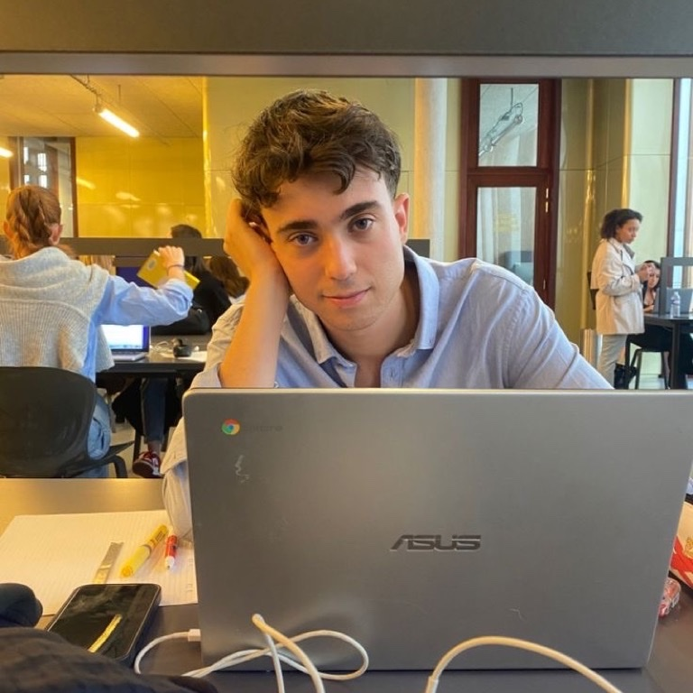
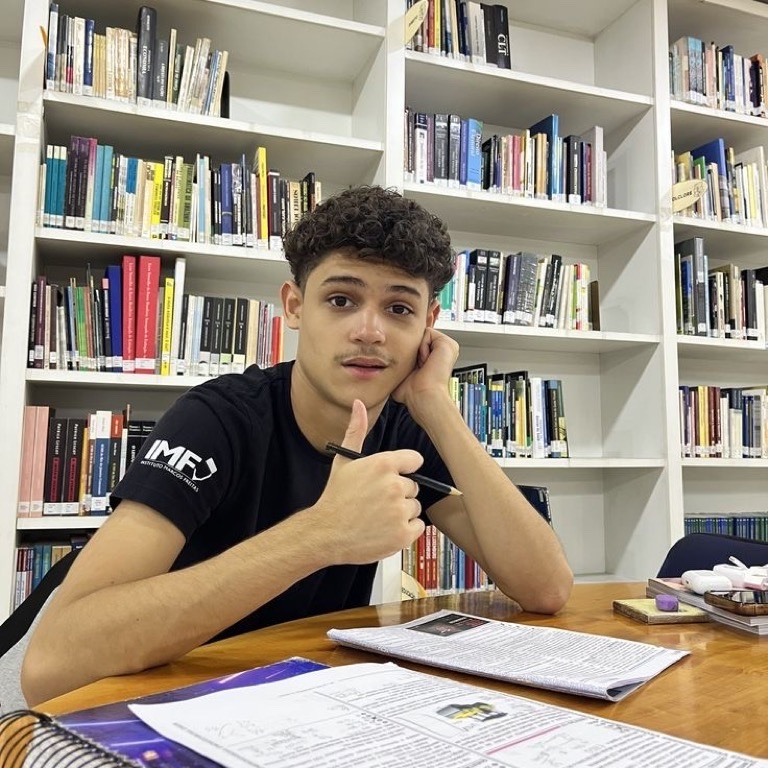

Her bölümde tek bir güçlü renk. Destek veren her şey yumuşak tonlarda.


Yeşil nokta: şu an çevrimiçi. Pembe etiket: yeni hoca. Fotoğrafın kendisi rengi taşır, çerçeve eklenmez.
Pembe: seçili gün. Açık sarı: dersin var.
Sarı buton sadece siyah zeminde. Açık zeminde ana buton her zaman pembe.